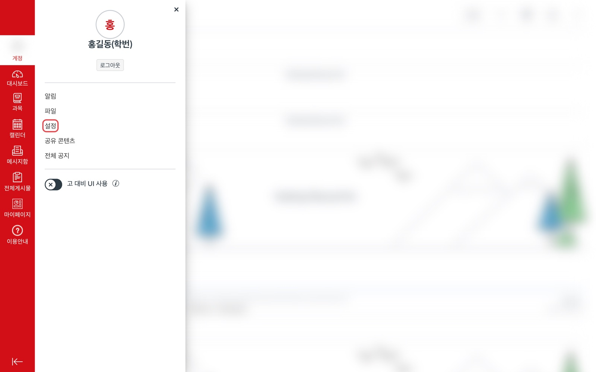
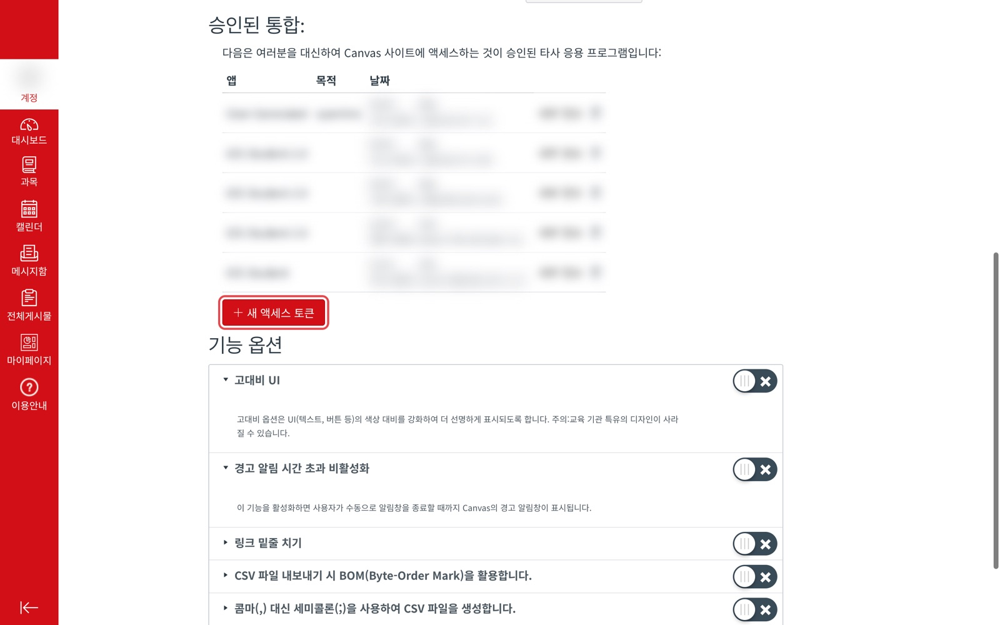
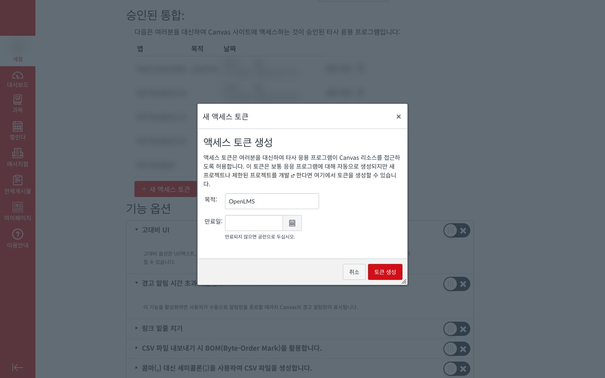
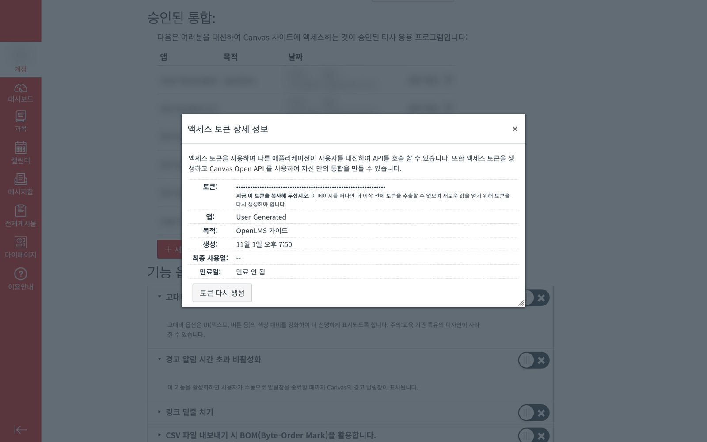

Canvas 액세스 토큰 발급
OpenLMS는 학교 Canvas에 여러분이 만든 액세스 토큰으로 접속합니다. 토큰은 Canvas의 계정 → 설정 → 승인된 통합에서 만들고, OpenLMS는 이를 OS 키체인에만 저장합니다.
-
계정 메뉴에서 설정 열기
Canvas에 로그인한 뒤 왼쪽 메뉴의 계정을 누르고, 펼쳐진 메뉴에서 설정을 누릅니다.

-
새 액세스 토큰 누르기
설정 페이지를 내려 승인된 통합 표 아래의 + 새 액세스 토큰을 누릅니다.

-
목적을 적고 토큰 생성
목적에는 나중에 알아볼 이름(예:
OpenLMS)을 적습니다. 만료일을 비워 두면 토큰이 만료되지 않습니다. 토큰 생성을 누릅니다.
-
토큰 복사
토큰 옆의 긴 문자열을 바로 복사합니다. 이 창을 닫으면 전체 토큰을 다시 볼 수 없고, 잃어버렸다면 토큰 다시 생성으로 새로 받아야 합니다.

스크린샷의 토큰 값과 개인정보는 가렸습니다.
-
OpenLMS에 로그인
터미널에서
openlms login을 실행하고 학교 Canvas 주소와 복사한 토큰을 붙여 넣습니다.$ npm install -g openlms $ openlms login LMS base URL (예: https://canvas.ssu.ac.kr): https://canvas.knu.ac.kr Access token:
토큰은 입력해도 화면에 나타나지 않습니다. OpenLMS가 토큰을 확인한 뒤 키체인에 저장하면
openlms sync로 강의자료를 받을 수 있습니다.
토큰 관리
액세스 토큰이 있으면 누구든 여러분 계정으로 Canvas를 쓸 수 있습니다. 비밀번호처럼 다루세요.
- 채팅, 메일, 스크린샷, 저장소에 붙여 넣지 마세요.
- 쓰지 않거나 유출이 의심되면 설정 → 승인된 통합에서 그 토큰을 삭제하세요. 삭제하면 바로 쓸 수 없게 됩니다.
- OpenLMS에 저장된 토큰은
openlms logout으로 지웁니다. - 학교마다 메뉴 이름은 조금 다를 수 있지만 순서는 같습니다.